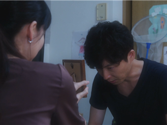
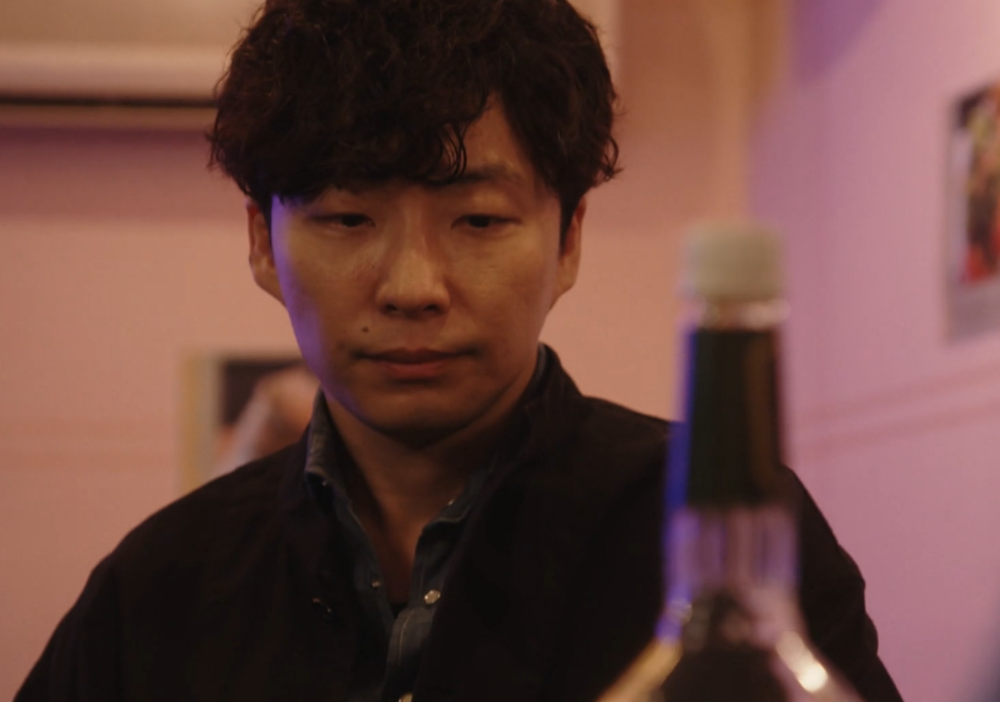
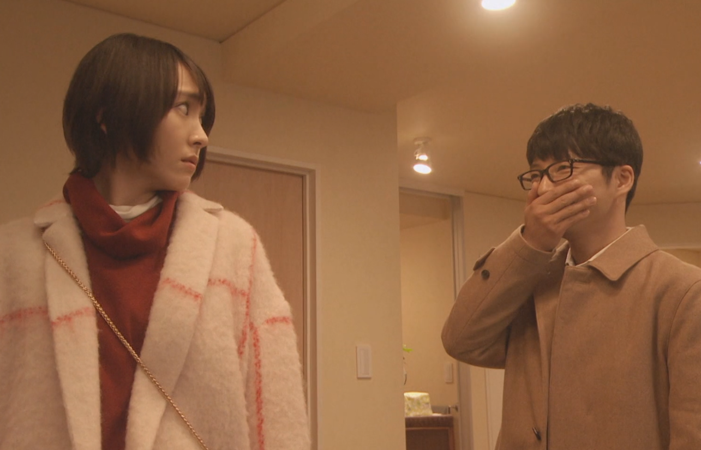
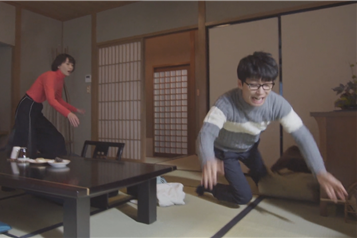
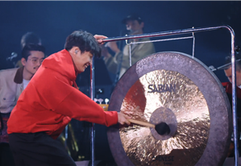
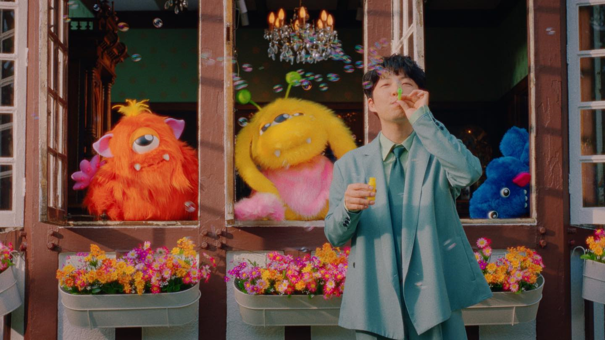

📝 주의사항
- 웃자고 만든 시험지입니다. 죽자고 달려들지 말아주세요.
- 컨닝, 인터넷 검색, 호시노겐에게 직접 질문하기 등을 엄격하게 권장합니다.
- 문제에 이의가 있을 시 출제자 말이 다 틀리고 응시자 말이 다 맞는 것으로 간주합니다.
- 답안지의 해당란에 필요한 내용을 정확히 기입했는지 확인하세요.
- 문제를 풀고 채점하신 후 꼭 굿즈를 받아 가세요.
- 호시노겐은 사랑♡입니다. 모두 즐거운 공연 관람 되세요.
호시노겐이 솔로 아티스트 데뷔 이전 속해있었던 밴드의 이름으로 알맞은 것은? [3점]
호시노겐의 앨범을 발매년도 순서대로 바르게 나열한 것은? [3점]
ばがのうた, GEN, Yellow Dancer, Pop Virus, Stranger
ばがのうた, GEN, Yellow Dancer, Pop Virus, Stranger
호시노겐의 「POP VIRUS」가 수록된 게임의 제목은? [3점]
다음 캐릭터중 호시노겐의 부캐와 그 설명이 바르게 짝지어지지 않은 것은? [5점]
다음 중 호시노겐에 대한 설명으로 옳지 않은 것은? [3점]
넷플릭스 토크쇼 Lighthouse에서 호시노겐과 공동 진행자의 이름으로 알맞은 것은? [3점]
STAR에는 총 4번의 しをてに가 나온다. 다음 보기 중 STAR에 들어가지 않은 しをてには 무엇인가? [5점]
호시노겐은 2024년 제75회 홍백가합전에 출연할 당시 음악 선곡이 地獄でなぜ悪い에서 ○○○○으로 바뀌는 사건을 겪었다. ○○○○에 들어갈 곡으로 알맞은 것은? [3점]
호시노겐이 うちで踊ろう를 작사·작곡하게 된 계기가 된 당시의 일본 시대 상황으로 알맞은 것은? [3점]
호시노겐의 출연작과 그 설명이 잘못 짝지어진 것은? [5점]
호시노겐의 이름을 한자로 쓰시오. [3점]
호시노겐이 결혼한 여배우의 이름은 무엇인가? [3점]
호시노겐이 진행하는 라디오의 제목은 무엇인가? [3점]
호시노겐의 인스타그램 계정 ID는 무엇인가? [3점]
호시노겐의 온라인 매거진 이름은 무엇인가? [3점]
네부리보가 무엇인지 간단히 쓰시오. [3점]
바나나맨의 시타라상이 딸과 토마토 스파게티를 만든 이야기를 듣고 호시노겐이 만든 노래의 제목은? [5점]
호시노겐이 쓴 책중 유일하게 한국어로 번역된 책의 제목은? [3점]
호시노겐은 2021년 처음으로 한국아티스트와 듀엣곡을 불렀다. 그 가수의 이름과 노래의 제목은? [3점]
호시노겐이 속해있는 소속사(음악활동시)의 이름은 무엇인가? [3점]
아래 사진은 2020년 방영된 호시노겐 주연 드라마 「MIU404」의 한 장면이다. 이 장면에 대하여 바르게 설명한 사람은? [3점]

아래 사진은 2020년 방영된 호시노겐 주연 드라마 「MIU404」의 한 장면이다. 이 장면에 대하여 잘못 설명한 사람은? [3점]

아래 사진은 2016년 방영된 호시노겐 주연 드라마 「도망치는건 부끄럽지만 도움이 된다」의 한 장면이다. 이 장면에 대하여 잘못 설명한 사람은? [3점]

아래 사진은 2016년 방영된 호시노겐 주연 드라마 「도망치는건 부끄럽지만 도움이 된다」의 한 장면이다. 이 장면에 대하여 바르게 설명한 사람은? [3점]

아래 사진은 2016년 방영된 호시노겐 주연 드라마 「코우노도리」의 한 장면이다. 누워있는 아이의 이름으로 알맞은 것은? [3점]
다음 사진은 호시노겐 유튜브 니세아키라 Vol.2 ~녹음 편~이다. 아래 들어갈 대사 중 알맞지 않은 것은? [5점]
다음 그림은 호시노겐의 스타디움 투어 「Pop Virus」의 한 장면이다. 이 퍼포먼스가 등장한 노래로 알맞은 것은? [3점]

다음 그림은 호시노겐 뮤직비디오의 한 장면이다. 이 장면이 등장한 뮤직비디오로 알맞은 것은? [3점]

다음 그림은 호시노겐의 2019년에 발표된 디지털EP 자켓사진이다. 음반에 수록되지 않은 곡은? [3점]

다음 그림은 호시노겐이 나온 CM의 한 장면이다. 어떤 CM인지 바르게 말한 사람은? [3점]